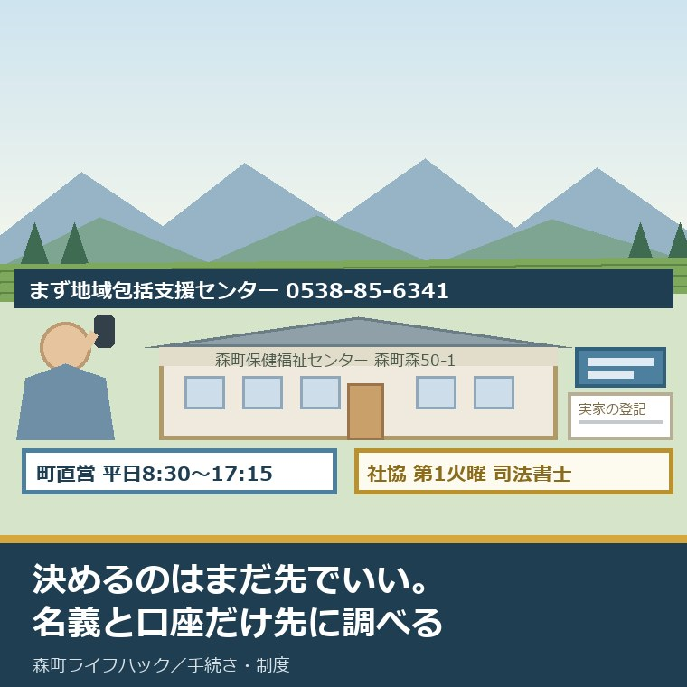
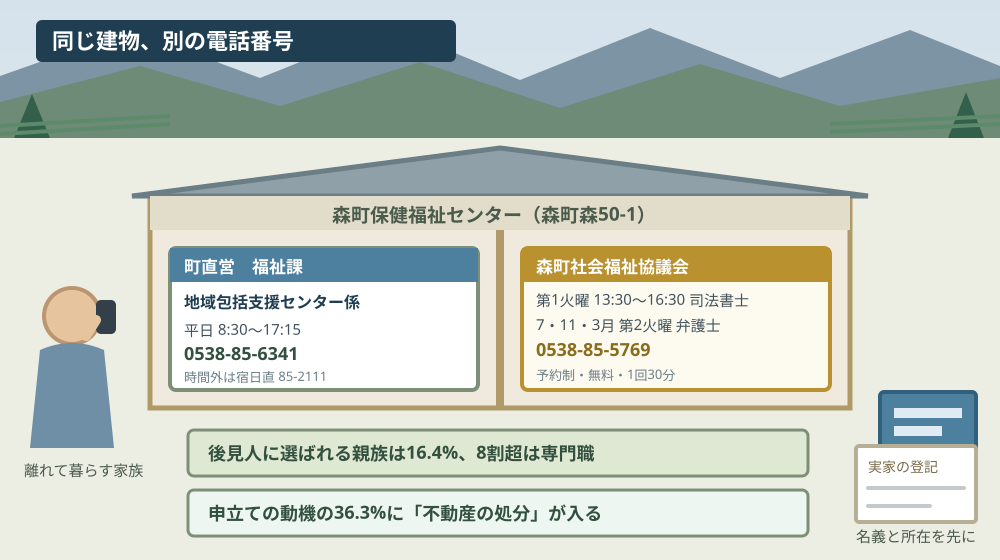
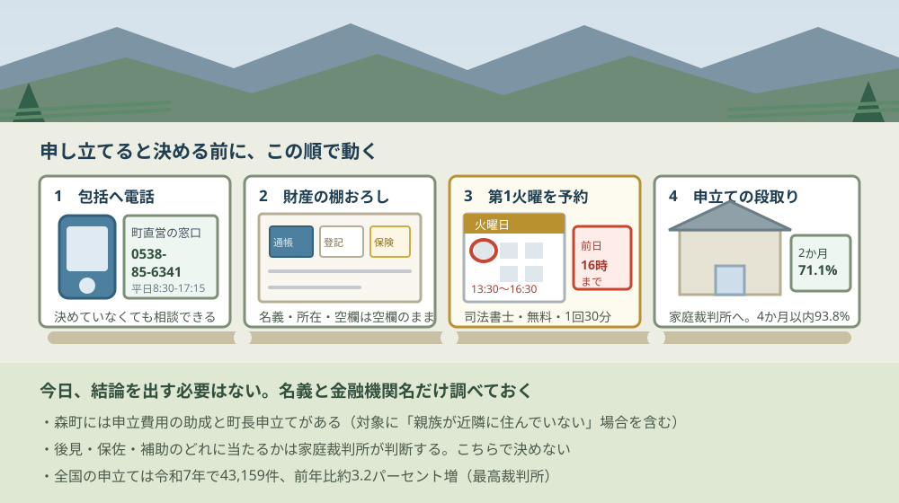

森町の成年後見制度の相談｜まず地域包括支援センターへ

この記事の要点
Q. 実家の親の物忘れとお金の管理が心配です。森町ではどこに相談すればいいですか。
A. 森町地域包括支援センターです。町直営で、森町保健福祉センター内（森町森50-1）、電話0538-85-6341、平日8時30分〜17時15分。町には申立費用の助成と町長申立てがあります。手続きそのものは森町社協の毎月第1火曜（13時30分〜16時30分・予約制・無料）に司法書士へ聞けます。
実家の親の様子が、去年の帰省より変わっている。同じ話を二度する。通帳がどこにあるか分からなくなっている。静岡県周智郡森町（遠州森町）に親を残して離れて暮らしている家族から、この段階で相談先を探されることがあります。
私は磐田市で小さな不動産業を営みながら、森町の空き家・農地・実家じまいのご相談を受けています。今日は2026年8月31日、月曜日です。この日に森町・森町社会福祉協議会・最高裁判所の公表資料で確認できたことを並べます。
先に言い切ります。入口は森町地域包括支援センター（0538-85-6341）でいい。介護保険の申請をするかどうかも、後見が要るかどうかも、まだ決めなくて構いません。相談だけで受け付けています。
もう一つ先に書きます。森町の公式サイトには、成年後見制度だけを扱ったページがありません。制度が無いのではなく、「高齢者の在宅福祉サービスについて」というページの中に、緊急通報システムや配食サービスと並んで1項目として載っています。だから検索で見つけにくい。
公式情報から確定できること
森町「高齢者のための相談窓口」（更新日2021年7月7日）、森町「高齢者の在宅福祉サービスについて」（更新日2024年4月17日）、森町「森町保健福祉センター」（更新日2023年5月8日）、森町社会福祉協議会「相談事業・暮らしのお手伝い」、最高裁判所事務総局家庭局「成年後見関係事件の概況 ―令和7年1月～12月―」（令和8年3月）を、2026年8月31日に確認しました。順に並べます。
一つ目。森町地域包括支援センターは町の直営です。森町の公表ページに「『森町地域包括支援センター』は森町が運営している機関で」と書かれています。民間委託ではありません。
二つ目。場所は森町保健福祉センター内（森町森50番地の1）です。電話は0538-85-6341、ファックスは0538-85-1294。受付時間は午前8時30分から午後5時15分（月曜日から金曜日、祝日と年末年始を除く）です。
三つ目。時間外は森町役場宿日直が受けます。公表ページに「時間外の受付：森町役場宿日直電話85－2111」と記載されています。夜間や休日に急ぐ話が出たときの受け皿がここです。
四つ目。相談は本人以外からでも受け付けます。ページには「高齢者の皆様：生活や健康、財産管理等困ったことや心配ごとなど。」「ご家族の皆様：高齢者についての心配ごと、介護での疲れや悩みなど。」「地域の皆様：お近くの高齢者に関する心配ごと」と、相手別に3つ書き分けられています。財産管理という言葉がここに入っています。
五つ目。森町には成年後見制度利用支援事業があります。原文は「成年後見制度の申立てに要する経費の全部又は一部を助成し、町長が成年後見制度(後見・保佐・補助)開始の審判などの申し立てを行います。」。費用の助成と、町長による申立ての2つが1つの事業に入っています。
六つ目。その対象は2種類で書かれています。「身寄りのない認知症高齢者、親族が近隣に住んでいないため、ご本人のみでは財産管理が困難な高齢者等」。後半の「親族が近隣に住んでいないため」は、遠方に住む家族にとって読み飛ばせない一行です。
七つ目。町が作ったリーフレットがあります。「成年後見制度の利用について（リーフレット）」というPDF（約1.3メガバイト）が同じページからダウンロードできます。ただし画像として作られたPDFのため、本文の中身は今回確認できていません。
八つ目。森町社会福祉協議会に、成年後見制度相談があります。相談員はリーガルサポート静岡支部所属の司法書士、開催日は毎月第1火曜日（祝日の場合は翌週の火曜日）、会場は森町保健福祉センター内相談室、時間は13時30分から16時30分。1回の相談は30分です。
九つ目。この相談は無料ですが、予約が要ります。「相談は予約制です。(相談日前日の16:00迄に申込み）」と記載されています。連絡先は森町社会福祉協議会事務局の0538-85-5769です。
十番目。相談の例として挙げられている内容が具体的です。「成年後見の申立手続きについて」「自分で財産管理が困難になってきた親族について」「定期預金の解約に金融機関から後見人を選任するよう言われたなど」。3つ目は実際によく起きる入口です。
十一番目。弁護士相談は別枠で、年3回です。7月・11月・3月の各月第2火曜日、13時30分から15時30分、森町保健福祉センター内相談室、1回30分、予約制（予約開始日は開催日の前月）。相談例に「親の認知症が進み、物忘れや記憶違いがひどくなっている、親の財産管理が心配」と書かれています。
十二番目。森町社協の福祉総合相談は、平日いつでも受け付けています。月曜日から金曜日の9時から17時、森町社会福祉協議会事務局。ほかに心配ごと相談が第1・3月曜日の9時から12時、森町保健福祉センター相談室で開かれています。
十三番目。これらは同じ建物の中にあります。森町保健福祉センター（平成12年9月オープン、敷地面積6,042平方メートル、延べ床面積3,197平方メートル）には、福祉課・健康こども課と森町社会福祉協議会が入っています。町の窓口と社協の窓口が、同じ建物の中で並んでいます。
十四番目。全国の成年後見関係事件の申立件数は、令和7年で43,159件です。最高裁判所事務総局家庭局の集計で、前年の41,841件から約3.2パーセントの増加。内訳は後見開始29,233件、保佐開始9,743件、補助開始3,302件、任意後見監督人選任881件です。
十五番目。申立人の最多は本人（約24.8パーセント）で、次が市区町村長（約23.7パーセント）です。本人の子は約18.5パーセント。子より市区町村長のほうが多いという順序になっています。市区町村長申立ては10,139件でした。
十六番目。申立ての動機は、預貯金等の管理・解約が93.4パーセントで最多です。次いで身上保護74.2パーセント、介護保険契約45.7パーセント、不動産の処分36.3パーセント、相続手続25.6パーセント。1件で複数計上されます。
| 申立ての動機（令和7年） | 件数 | 割合 |
|---|---|---|
| 預貯金等の管理・解約 | 39,871件 | 93.4% |
| 身上保護 | 31,655件 | 74.2% |
| 介護保険契約 | 19,502件 | 45.7% |
| 不動産の処分 | 15,502件 | 36.3% |
| 相続手続 | 10,909件 | 25.6% |
| 保険金受取 | 7,578件 | 17.8% |
十七番目。成年後見人等に選ばれるのは、親族が16.4パーセントだけです。親族以外が83.6パーセント。最高裁の資料には「親族以外が成年後見人等に選任されたものは、全体の約83.6％（前年は約82.9％）であり、親族が成年後見人等に選任されたものを上回っている。」と書かれています。
十八番目。専門職の内訳は、司法書士が最多です。親族以外35,718件のうち司法書士33.5パーセント、弁護士24.9パーセント、社会福祉士20.4パーセント。市民後見人は390件で1.1パーセントにとどまります。
十九番目。審理期間は、2か月以内が71.1パーセント、4か月以内が93.8パーセントです。鑑定が実施されるのは約3.4パーセントで、費用は10万円以下が85.8パーセント。開始原因は認知症が61.3パーセントです。
二十番目。静岡家庭裁判所管内の申立件数は1,268件、うち市区町村長申立ては270件（21.3パーセント）です。ただし同じ資料の注に「市区町村別の申立件数については把握していない。」と明記されており、森町だけの件数は公表されていません。

この図で描きたかったのは、入口が二つあって、どちらも森町森50-1にあるということです。町直営の地域包括支援センター係が0538-85-6341、森町社会福祉協議会が0538-85-5769。建物は同じで、電話は別です。
もう一つは、右側の相談日です。司法書士に聞けるのは月に1日、弁護士に聞けるのは年に3日。この数が、森町で専門家に直接会える機会の全部です。予約制なので、思い立った日に行っても座れません。
数字を、実家の側に置き直す
43,159件という全国の数字は、そのままでは判断の材料になりません。ここから先は公表値をもとにした当方の概算で、公表されている統計ではありません。
静岡家庭裁判所管内の1,268件を365日で割ると、1日あたり3.5件です。静岡県内のどこかで、毎日3件から4件、この申立てが出されている計算になります。特別な制度ではありません。
不動産屋として、私がいちばん見るのは別の行です。申立ての動機の36.3パーセントに「不動産の処分」が入っています。15,502件。3件に1件以上が、家か土地の売却に関係しています。
これは私の商売の実感と一致します。実家を売ろうとして最後に止まるのは、たいてい価格ではなく名義と判断能力です。親の名義のままで、親が契約の意味を理解できない状態だと、売買契約は結べません。そこで初めて後見の話が出てきます。
もう一つ、費用の側の数字を置きます。鑑定が行われるのは全体の約3.4パーセントで、その費用は10万円以下が85.8パーセントです。鑑定は必ず要るものではなく、要る場合も多くは10万円以下に収まっている、という読み方になります。
時間の側も同じです。申立てから2か月以内に終わるのが71.1パーセント、4か月以内で93.8パーセント。私はこの数字を見て、思っていたより早いと感じました。ただし、これは申立てが出てからの期間です。書類を集める前の期間は、この統計に入っていません。
町のサイトに載っていない相談日がある
森町の公式サイトを「成年後見」で探した人が、たどり着けない情報が一つあります。森町社会福祉協議会の成年後見制度相談です。
相談員は、リーガルサポート静岡支部所属の司法書士です。公益社団法人成年後見センター・リーガルサポートは、司法書士による成年後見の専門団体です。その静岡支部の司法書士が、月に1度、森町保健福祉センターの相談室に来ます。
開催は毎月第1火曜日の13時30分から16時30分、1回30分、無料。祝日の場合は翌週の火曜日にずれます。予約は相談日の前日16時までで、申込先は森町社会福祉協議会（0538-85-5769）です。
そして、社協が挙げている相談例の3つ目が実務的です。「定期預金の解約に金融機関から後見人を選任するよう言われたなど」。後見の相談は、多くの場合こうやって始まります。制度を勉強して始まるのではなく、窓口で断られて始まります。
もう一つ、弁護士相談も同じ建物で開かれています。7月・11月・3月の各月第2火曜日、13時30分から15時30分。相談例に「親の認知症が進み、物忘れや記憶違いがひどくなっている、親の財産管理が心配」と、そのままの言葉で書かれています。
良い点：町長申立てと費用助成が、同じ事業に入っている
公表資料を並べたうえで、評価できる点が4つありました。順に書きます。
一つ目。費用の助成と町長申立てが、1つの事業として書かれていることです。申立ての費用が出せない、そもそも申し立てる親族がいない。この2つは別の困りごとですが、森町の案内は同じ1行で両方に答えています。読む側は「どちらの相談も同じ窓口でいい」と分かります。
二つ目。対象に「親族が近隣に住んでいないため」という条件が入っていることです。身寄りがない人だけを想定した書き方になっていない。森町を出た子が都市部で暮らしている家庭は多く、その形が対象の文言に含まれています。
三つ目。地域包括支援センターが町の直営であることです。委託だと、担当が替わったときに経緯が引き継がれないことがあります。町が直接運営していれば、介護保険の申請や高齢者福祉の他の事業と同じ課の中で話が通ります。
四つ目。社協の相談が予約制で、1回30分と決まっていることです。時間が決まっていると、こちらも準備して行きます。何を30分で聞くかを考える。それだけで相談の質が変わります。
注文したい点：探している人が、たどり着けない
ここからは、調べた側からの注文を4つ書きます。町を批判したいのではなく、公表資料を突き合わせた結果の報告です。
一つ目。成年後見制度の独立したページがありません。森町の記載は「高齢者の在宅福祉サービスについて」の中の1項目で、ひとりぐらし高齢者等緊急通報システム、救急医療情報キット、高齢者短期入所事業、配食サービス、家族介護者教室と並んでいます。「森町 成年後見」で探した人が最初に見る場所ではありません。
二つ目。森町社協の成年後見制度相談が、町のページから見えません。毎月第1火曜に司法書士が来ているという情報は、町の公表ページを何度読んでも出てきません。町と社協は同じ建物にあります。相互のリンクが1本あれば、探している人はたどり着きます。
三つ目。リーフレットが画像のPDFです。約1.3メガバイトの「成年後見制度の利用について（リーフレット）」は、画面の読み上げにも、検索にも、かかりにくい形式です。中身が良くても、探している人の目に触れる確率が下がります。
四つ目。森町を対象とする中核機関が確認できませんでした。参考までに、私の店がある磐田市には磐田市成年後見支援センター（磐田市国府台57-7・磐田市社会福祉協議会内・0538-37-2792・平日8時30分から17時15分・相談無料）があり、市民後見人の養成まで担っています。森町を含む圏域に同じ役割の機関があるかどうかは、今回の範囲では確認できていません。
ここは私も判断がつかないところです。「親族が近隣に住んでいないため」という対象の書き方を、どこまで広く読んでよいのか。身寄りのない方への支援が中心の事業だとすれば、遠方に子がいる家庭は対象外かもしれません。公表文だけでは決められません。だから、この一点は電話で聞く項目として残します。

この図の二番目に財産の棚おろしを置いたのは、私の商売の癖です。後見が要るかどうかを決める前に、何がどこにいくらあるかを書き出すほうが先です。通帳、証券、保険、そして実家の名義。この4つが揃うと、相談の中身が具体的になります。
三番目の予約を四番目より前に置いたのにも理由があります。第1火曜は月に1日しかありません。財産の棚おろしが終わってから予約しようとすると、次の月まで空きます。棚おろしと並行して枠を押さえるほうが早い。
対案・結論：今日、ご家族が確かめられること
ここからは、今日できることを順番に書きます。後見を申し立てると決めていなくても、全部やって構いません。
一つ目。森町地域包括支援センター（0538-85-6341）に電話します。平日8時30分から17時15分。伝えるのは3つです。親の氏名と住んでいる地区、気になっている具体的な出来事（同じ話を繰り返す、通帳が見つからない、など）、そして自分がどこに住んでいるか。最後の1つが、町の助成の対象を判断する材料になります。
二つ目。親の財産を1枚に書き出します。預金は金融機関と支店まで、実家は所在と名義と地目、保険は証券番号まで。これは今日、実家に行かなくても分かる範囲で構いません。空欄は空欄のままにしておきます。
三つ目。森町社会福祉協議会（0538-85-5769）に、第1火曜の枠を確認します。次の第1火曜は2026年9月1日、つまり明日です。前日16時までという申込期限を考えると、今日中に電話するかどうかが分かれ目になります。間に合わなければ10月6日が次の候補です。
四つ目。判断能力のことを、決めつけないでください。後見・保佐・補助の3つは、判断能力の程度で分かれます。令和7年の申立ての内訳では後見開始が29,233件と最も多いものの、保佐9,743件、補助3,302件も一定数あります。どれに当たるかは、こちらが決める話ではありません。
五つ目。今日、結論を出す必要はありません。私はこれを、いつも最後に書きます。後見を申し立てるかどうかは、今日決めなくていい。ただ、預金の金融機関名と実家の名義だけは調べておくと、半年後にどの選択をするにしても必ず効いてきます。親の生活圏を歩いて確かめる手順はお盆に実家へ戻る三日間の記事に書きました。
家族に残す記録
不動産の相談で毎回お願いしているのが、記録を1枚にまとめることです。後見の相談では、この1枚がそのまま持ち物になります。
紙でもスマートフォンのメモでも構いません。置き場所を1か所に決めることのほうが、形式より効きます。
- 親の氏名・生年月日・住所（森町のどの地区か）と、現在の住まいの形（自宅・施設・入院中）
- 気になっている出来事と、それに最初に気づいた日付
- 預金：金融機関名・支店名・口座の種類（残高は分かる範囲で）。通帳とキャッシュカードの保管場所
- 実家：所在・登記の名義・地目・敷地の広さ。固定資産税の通知が誰のところへ届いているか
- 保険・年金：保険会社と証券番号、年金の受取口座
- かかりつけ医と、診断を受けている場合はその病名・診断日
- 森町地域包括支援センターへ電話した日と、対応した係。時間外に連絡した場合は宿日直だったかどうか
- 森町社協の第1火曜の相談を予約した日と、相談で聞いた内容
- 森町地域包括支援センター 0538-85-6341（森町森50-1・平日8:30〜17:15／時間外は0538-85-2111）
- 森町社会福祉協議会 0538-85-5769（森町保健福祉センター内）
大石の視点
ここからは私の意見です。公表されている事実とは分けてお読みください。この記事には、私が実際に立ち会った場面としての一人称の話は入れていません。森町で成年後見の相談を私が直接受けた記録がないためで、以下は資料を読んだ上での見方です。
私がこの制度でいちばん誤解されていると思うのは、「家族が後見人になる制度」だと思われていることです。令和7年の統計では、成年後見人等に選ばれた人のうち親族は16.4パーセント。8割超は司法書士・弁護士・社会福祉士などの専門職です。親族が候補者として申立書に書かれている事件も約19.7パーセントしかありません。
その上で注文したいのは、探しやすさです。森町の制度そのものは悪くありません。費用の助成があり、町長申立てもあり、社協には月1回の司法書士相談まである。足りないのは制度ではなく、それらが1か所に集まって見えていないことです。同じ建物にある2つの窓口が、それぞれのページからお互いを指していない。
不動産の目で言えば、これは物件の広告とよく似ています。良い物件でも、載っている場所が悪ければ問い合わせは来ません。制度の中身と、その制度に人がたどり着けるかどうかは別の問題です。私の商売なら、載せる場所を変えるだけで数字が変わります。
だから私はこう案内します。森町の親のことで迷ったら、まず0538-85-6341に電話して、その電話の中で「社協の第1火曜の成年後見相談も予約したい」と続けて言ってください。同じ建物なので話は通ります。判断能力が落ち始めた親の相談先は森町の認知症の相談窓口に、センター自体の使い方は森町直営の地域包括支援センターのまとめに、町独自の助成の条件は森町の成年後見制度利用支援事業のまとめに整理しています。実家の固定資産税の通知が誰に届いているかは、名義を確かめる入口として相続人代表者の通知の記事にまとめました。
まとめ
この記事で確認した事実を、最後に並べ直します。すべて2026年8月31日時点で公表されている内容です。
- 森町地域包括支援センターは町直営（森町の公表ページに「森町が運営している機関」と記載）。森町保健福祉センター内（森町森50番地の1）、電話0538-85-6341、ファックス0538-85-1294、受付は午前8時30分から午後5時15分（月曜日から金曜日、祝日と年末年始を除く）、時間外は森町役場宿日直0538-85-2111（更新日2021年7月7日）
- 相談は本人・家族・地域の3者から受け付け、対象に「財産管理等困ったことや心配ごと」が明記されている
- 森町の成年後見制度利用支援事業は「成年後見制度の申立てに要する経費の全部又は一部を助成し、町長が成年後見制度(後見・保佐・補助)開始の審判などの申し立てを行います。」（更新日2024年4月17日）
- 対象は「身寄りのない認知症高齢者、親族が近隣に住んでいないため、ご本人のみでは財産管理が困難な高齢者等」
- 町作成のリーフレット（PDF約1.3メガバイト）があるが画像形式で、本文の内容は未確認
- 森町社会福祉協議会の成年後見制度相談は、リーガルサポート静岡支部所属の司法書士が担当。毎月第1火曜日（祝日の場合は翌週の火曜日）13時30分から16時30分、1回30分、無料、予約制（相談日前日16時まで）、会場は森町保健福祉センター内相談室、申込先0538-85-5769
- 同社協の弁護士相談は7月・11月・3月の各月第2火曜日13時30分から15時30分、1回30分、無料、予約制（予約開始日は開催日の前月）
- 同社協の福祉総合相談は月曜日から金曜日の9時から17時、心配ごと相談は第1・3月曜日の9時から12時
- 森町保健福祉センター（平成12年9月オープン・敷地6,042平方メートル・延べ床3,197平方メートル）には福祉課・健康こども課と森町社会福祉協議会が入っている（更新日2023年5月8日）
- 全国の成年後見関係事件の申立件数は令和7年で43,159件、前年41,841件から約3.2パーセント増（最高裁判所事務総局家庭局・令和8年3月）
- 内訳は後見開始29,233件、保佐開始9,743件、補助開始3,302件、任意後見監督人選任881件
- 申立人は本人が約24.8パーセントで最多、次いで市区町村長が約23.7パーセント（10,139件）、本人の子が約18.5パーセント
- 申立ての動機は預貯金等の管理・解約93.4パーセント、身上保護74.2パーセント、介護保険契約45.7パーセント、不動産の処分36.3パーセント（15,502件）、相続手続25.6パーセント（複数計上あり）
- 成年後見人等に選任されたのは親族16.4パーセント、親族以外83.6パーセント。親族以外の内訳は司法書士33.5パーセント、弁護士24.9パーセント、社会福祉士20.4パーセント、市民後見人1.1パーセント（390件）
- 審理期間は2か月以内71.1パーセント、4か月以内93.8パーセント。鑑定の実施率は約3.4パーセントで、費用は10万円以下が85.8パーセント。開始原因は認知症61.3パーセント
- 静岡家庭裁判所管内の申立件数は1,268件、うち市区町村長申立ては270件（21.3パーセント）。同資料の注に「市区町村別の申立件数については把握していない。」と明記されており、森町単独の件数は公表されていない
- 静岡管内の1,268件は1日あたり3.5件にあたる（当方の計算）
- 森町を対象とする成年後見の中核機関、森町のリーフレットの本文、町の助成が遠方に住む子のいる世帯に適用されるかは、いずれも確認できなかった
よくある質問
Q1. 森町で親の成年後見を考え始めたら、最初にどこへ相談すればいいですか。
A1. 森町地域包括支援センターです。森町の公表ページには「森町が運営している機関」と書かれた町直営のセンターで、場所は森町保健福祉センター内（森町森50番地の1）、電話は0538-85-6341、受付時間は午前8時30分から午後5時15分（月曜日から金曜日、祝日と年末年始を除く）です。時間外は森町役場宿日直（0538-85-2111）が対応します。家族や地域の方からの相談も受け付けています。
Q2. 森町には成年後見の費用を助成する制度がありますか。
A2. あります。森町の「高齢者の在宅福祉サービスについて」（更新日2024年4月17日）に成年後見制度利用支援事業が掲載され、「成年後見制度の申立てに要する経費の全部又は一部を助成し、町長が成年後見制度(後見・保佐・補助)開始の審判などの申し立てを行います。」と記載されています。対象は「身寄りのない認知症高齢者、親族が近隣に住んでいないため、ご本人のみでは財産管理が困難な高齢者等」です。
Q3. 森町で、申立ての手続きそのものを専門家に聞ける場はありますか。
A3. 森町社会福祉協議会の成年後見制度相談があります。相談員はリーガルサポート静岡支部所属の司法書士、開催日は毎月第1火曜日（祝日の場合は翌週の火曜日）、会場は森町保健福祉センター内相談室、時間は13時30分から16時30分で1回30分です。相談は無料ですが予約制で、相談日前日の16時までに申し込みます。連絡先は0538-85-5769です。
最後に一つだけ。ここに書いた窓口、受付時間、電話番号、相談日、件数、割合、更新日は、いずれも森町・森町社会福祉協議会・最高裁判所・磐田市の公表内容を2026年8月31日に確認して書き写したものです。静岡管内1,268件を1日あたり3.5件とした計算は当方の概算であり、公表されている統計ではありません。森町単独の申立件数は、最高裁の資料に「市区町村別の申立件数については把握していない。」と記載されており存在しません。森町のリーフレットは画像形式のPDFのため本文を確認できていません。町の助成が遠方に住む子のいる世帯に適用されるか、森町を対象とする中核機関があるかも確認できていません。相談日と制度の内容は変わります。動く前に、必ず森町地域包括支援センター（0538-85-6341）と森町社会福祉協議会（0538-85-5769）へ電話でご確認ください。
参考にした公式情報
- 高齢者のための相談窓口／静岡県森町（「更新日：2021年07月07日」と表示されていること、「『森町地域包括支援センター』は森町が運営している機関で」と記載されていること、相談の対象が高齢者本人・ご家族・地域の3者に書き分けられ「生活や健康、財産管理等困ったことや心配ごとなど。」と記載されていること、「場所：森町保健福祉センター内（森町森50番地の1）」「電話：85－6341 ファックス：85－1294」「受付時間：午前8時30分～午後5時15分(月曜日～金曜日、祝日と年末年始除く）」「時間外の受付：森町役場宿日直電話85－2111」と記載されていること、認知症サポーター養成講座を開講していることを2026年8月31日に確認）
- 高齢者の在宅福祉サービスについて／静岡県森町（「更新日：2024年04月17日」と表示されていること、成年後見制度利用支援事業が独立したページではなく同ページ内の一項目として掲載されていること、「成年後見制度の申立てに要する経費の全部又は一部を助成し、町長が成年後見制度(後見・保佐・補助)開始の審判などの申し立てを行います。」と記載されていること、対象が「身寄りのない認知症高齢者、親族が近隣に住んでいないため、ご本人のみでは財産管理が困難な高齢者等」であること、「成年後見制度の利用について（リーフレット）(PDFファイル:1.3MB)」が掲載されていること、同じページにひとりぐらし高齢者等緊急通報システム整備事業・救急医療情報キットの配布・高齢者短期入所事業・森町配食サービス利用助成事業・家族介護者教室が並んでいること、問い合わせ先が福祉課地域包括支援センター係（森町森50-1・0538-85-6341）であることを2026年8月31日に確認）
- 森町保健福祉センター／静岡県森町（「更新日：2023年05月08日」と表示されていること、平成12年9月にオープンしたこと、敷地面積6,042平方メートル・延べ床面積3,197平方メートルであること、「センター内には、福祉課・健康こども課と社会福祉法人森町社会福祉協議会のほか」と記載されていること、保健福祉センター事務室（福祉課・健康こども課）の代表が0538-85-1800で8時30分から17時15分、森町社会福祉協議会が0538-85-5769で8時30分から17時15分と表に記載されていることを2026年8月31日に確認）
- 相談事業・暮らしのお手伝い／森町社会福祉協議会（成年後見制度相談の相談員が「リーガルサポート静岡支部所属の司法書士」、開催日が「毎月第１火曜日（祝日の場合は翌週の火曜日）」、会場が「森町保健福祉センター内相談室」、開催時間が「１３時３０分～１６時３０分」、1回の相談が30分、「相談は予約制です。(相談日前日の16:00迄に申込み）」と記載されていること、相談例に「成年後見の申立手続きについて」「自分で財産管理が困難になってきた親族について」「定期預金の解約に金融機関から後見人を選任するよう言われたなど」が挙げられていること、弁護士相談が7月・11月・3月の各月第2火曜日13時30分から15時30分で予約制であり相談例に「親の認知症が進み、物忘れや記憶違いがひどくなっている、親の財産管理が心配」が挙げられていること、福祉総合相談が月曜日から金曜日の9時から17時、心配ごと相談が第1・3月曜日の9時から12時であること、事務局が0538-85-5769・FAX0538-85-1294であることを2026年8月31日に確認）
- 成年後見関係事件の概況 ―令和7年1月～12月―／最高裁判所事務総局家庭局（令和8年3月の資料であること、申立件数の合計が43,159件で前年41,841件から対前年比約3.2パーセントの増加であること、内訳が後見開始29,233件・保佐開始9,743件・補助開始3,302件・任意後見監督人選任881件であること、申立人が本人約24.8パーセント・市区町村長約23.7パーセント（10,139件）・本人の子約18.5パーセントの順であること、申立ての動機が預貯金等の管理・解約39,871件（93.4パーセント）・身上保護31,655件（74.2パーセント）・介護保険契約19,502件（45.7パーセント）・不動産の処分15,502件（36.3パーセント）・相続手続10,909件（25.6パーセント）であること、「親族以外が成年後見人等に選任されたものは、全体の約８３．６％（前年は約８２．９％）であり、親族が成年後見人等に選任されたものを上回っている。」と記載されていること、親族以外の内訳が司法書士33.5パーセント・弁護士24.9パーセント・社会福祉士20.4パーセント・市民後見人1.1パーセント（390件）であること、審理期間が2か月以内71.1パーセント・4か月以内93.8パーセントであること、鑑定実施率が約3.4パーセントで費用10万円以下が85.8パーセントであること、開始原因の認知症が61.3パーセントであること、静岡家庭裁判所管内の申立件数が1,268件でうち市区町村長申立てが270件（21.3パーセント）であること、資料5の注に「市区町村別の申立件数については把握していない。」と記載されていることを2026年8月31日に確認）
- 成年後見支援センター／磐田市（更新日2025年3月3日と表示されていること、所在地が磐田市国府台57-7（磐田市社会福祉協議会内）、電話が37-2792、窓口受付時間が午前8時30分から午後5時15分、相談が無料で来所の場合は事前予約が必要であること、市民後見人の養成及び活動支援を行うと記載されていることを2026年8月31日に確認）

最終確認日：2026-08-31 ／ 本記事は公表情報と執筆者の見解を分けて記載しています。静岡家庭裁判所管内の1,268件を1日あたり3.5件とした数字は執筆者の概算であり、公表されている統計ではありません。森町単独の申立件数は、最高裁判所の資料に「市区町村別の申立件数については把握していない。」と記載されており存在しません。森町が作成した成年後見制度のリーフレットは画像形式のPDFのため、本文の内容を確認できていません。町の成年後見制度利用支援事業が遠方に住む子のいる世帯に適用されるか、森町を対象とする成年後見の中核機関があるかも、2026年8月31日時点で確認できていません。成年後見は本人の権利に関わる手続きであり、どの類型に当たるか、誰が後見人になるかは家庭裁判所が判断します。個別の可否は必ず森町地域包括支援センター（0538-85-6341）、森町社会福祉協議会（0538-85-5769）、または司法書士・弁護士へご確認ください。